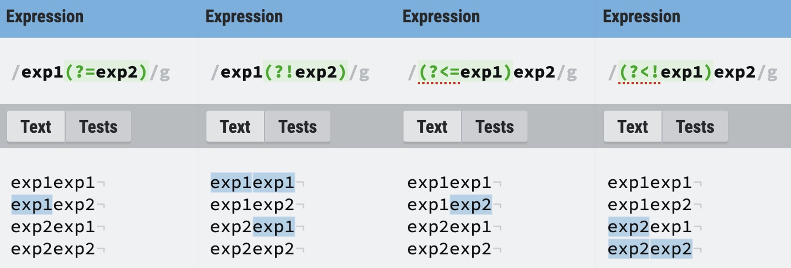

正则表达式¶
本文转载、加工自一位我非常尊敬的学长——TonyCrane
正则表达式（Regular Expression）使用单个字符串来描述、匹配一系列匹配某个句法规则的字符串。
———— 维基百科
Abstract
正则表达式用途广泛，而且功能强大又好用。可以说既简单又繁琐，但是用起来很爽
一些工具：
1 语法¶
1.1 普通字符¶
所有不是元字符的字符都可以直接写出来用来匹配，比如大小写字母、数字、符号等
有语法意义的字符需要使用 \ 转义，比如 \( \) \[ \] \.分别匹配 ()[]. 这五个字符
| 语法 | 描述 |
|---|---|
| [...] | 匹配任意在 ... 中的字符，如 [ABC] 匹配所有 A B C 字符 |
| [^...] | 匹配任意不在 ... 中的字符，如 [^ABC] 匹配除了 A B C 外的所有单个字符 |
| [x-y] | 按照顺序匹配从 x 到 y 到所有字符，如 [a-z] 匹配所有小写字母，[A-E] 匹配 A 到 E 这五个字符 |
| . | 匹配任意除了换行符以外的字符 |
| \w | 匹配字母数字下划线，相当于 [a-zA-Z0-9_] |
| \d | 匹配数字，相当于 [0-9] |
| [\u4e00-\u9fa5] | 匹配所有Unicode编码的汉字 |
| x|y | 匹配 x 或 y，优先级最低，如 a|bcd 匹配 a 或 bcd |
1.2 非打印字符¶
| 语法 | 描述 |
|---|---|
| \cx | 匹配由 x 指明的控制字符，x 必须属于 [a-zA-Z]，否则 \c 直接视为 c，如 \cM 匹配 Ctrl-M 即回车符 |
| \f | 匹配一个换页符，相当于 \x0c \cL |
| \n | 匹配一个换行符，相当于 \x0a \cJ |
| \r | 匹配一个回车符，相当于 \x0d \cM |
| \t | 匹配一个制表符，相当于 \x09 \cI |
| \v | 匹配一个垂直制表符，相当于 \x0b \cK |
| \s | 匹配任何空白字符，相当于 [ \f\n\r\t\v]，unicode 下也会匹配全角空格符 |
| \S | 匹配任何非空白符，相当于 [^ \f\n\r\t\v] |
1.3 限定符¶
用来指定一个子表达式出现了多少次
| 语法 | 描述 |
|---|---|
| {n} | 前一个子表达式匹配准确的 n 次，如 o{2} 匹配两个连续的 o |
| {n,} | 前一个子表达式匹配至少 n 次，如 o{2,} 可以匹配 goooood 中的所有 o，但不匹配 god 中的 o |
| {n,m} | 前一个子表达式匹配至少 n 次，至多 m 次 |
| * | 前一个子表达式匹配 0 次或多次，相当于 {0,} |
| + | 前一个子表达式匹配 1 次或多次，相当于 {1,} |
| ? | 前一个子表达式可有可无（匹配 0 次或 1 次），相当于 {0,1} |
贪婪¶
* 和 + 的匹配都是贪婪的，即尽可能匹配更多的字符，而在它们后面加上 ? 就可以非贪婪（即最小匹配）
- <.*> 会匹配整个
<h1>header</h1>字符串 - <.*?> 只会匹配其中的
<h1>和</h1>
1.4 定位符¶
只匹配位置，没有字符与之对应
| 语法 | 描述 |
|---|---|
| ^ | 匹配字符串开头，如果是多行模式，则新的一行也算新的字符串 |
| $ | 匹配字符串结尾，多行模式同理看成多个字符串 |
| \b | 匹配单词边界，即字符与空格中间的位置 |
| \B | 匹配非单词边界 |
定位符只能单独使用，不能附加限制符指定个数
1.5 分组¶
用 () 可以指定匹配一个组，使用 () 可以指定不同选项，每一项间用 | 分隔
同时 () 也是捕获分组，即括号内匹配的内容会被缓存，如果要避免这种，需要使用 (?:) 非捕获元来进行匹配
1.5.1 反向引用¶
被缓存的捕获分组可以直接使用 \n 再次引用，其中 n 是 1 到 2 位的十进制数
捕获分组的编号从 1 开始，最多 99 个，\1 即表示和第一个圆括号中匹配的结果相同的部分
如 (abc|def)\1 匹配 abcabc、defdef 但不匹配 abcdef、defabc
1.5.2 先行断言和后行断言¶
正则表达式有先行断言（lookahead）和后行断言（lookbehind），分为四种形式：
| 语法 | 名称 |
|---|---|
| (?=pattern) | 零宽正向先行断言 zero-width positive lookahead assertion |
| (?!pattern) | 零宽负向先行断言 zero-width negative lookahead assertion |
(?<=pattern) |
零宽正向后行断言 zero-width positive lookbehind assertion |
| (?<!pattern) | 零宽负向后行断言 zero-width negative lookbehind assertion |
和定位符类似，它只匹配位置，不匹配内容，所以叫做零宽（zero-width），这些位置的规则是：
- (?=pattern)：匹配后面可以匹配 pattern 的位置
- (?!pattern)：匹配后面无法匹配 pattern 的位置
- (?<=pattern)：匹配前面可以匹配 pattern 的位置
- (?<!pattern)：匹配前面无法匹配 pattern 的位置
例子

其中后行断言有些语言不支持（python re 支持）
2 修饰符¶
修饰符不属于表达式的内容，但是指定了匹配的规则，js 中的正则写法为 /pattern/flags
其中 flags 就是修饰符
| 修饰符 | 名称 | 含义 |
|---|---|---|
| i | ignore | 忽略大小写 |
| g | global | 全局匹配，查找所有匹配项 |
| m | multi-line | 多行匹配，使 ^$ 匹配每行的开头和结尾 |
| s | single-line | 单行匹配，只视为一个字符串，. 也可以匹配换行符 |
不同语言中写法和种类不同
3 优先级¶
正则表达式也有优先级，同一优先级则从左向右运算，不同优先级则从高到低。从高到低：
- 转义符
\ - 括号符
(...) (?:...) (?=...) (?!...) (?<=...) (?<!...) [...] [^...] - 限定符
* + ? {n} {n,} {n,m} - 定位符
^ $ - 字符
- 或
|
4 Python re 模块¶
python 的 re 模块提供了正则表达式的相关方法：
- re.match(pattern, string, flags=0)：使用 pattern 从头匹配 string，flags 为修饰符。
匹配失败返回 None，匹配成功返回一个 re.Match - re.search(pattern, string, flags=0)：使用 pattern 扫描整个 string，返回第一个匹配的 re.Match
- re.sub(pattern, repl, string, count=0, flags=0)：
- pattern：要被替换部分的正则表达式
- repl：替换的字符串，或者替换用的函数
- 是函数时接受一个 re.Match，返回一个字符串
- string：原字符串
- count：替换的最大次数，是 0 时表示替换全部
- flags：修饰符
- re.compile(pattern, flags=0)：编译一个正则表达式，返回一个 re.Pattern
- re.findall(pattern, string, flags=0)：在 string 中查找所有匹配 pattern 的结果，返回列表
- re.finditer(pattern, string, flags=0)：在 string 中查找所有匹配 pattern 的部分，返回迭代器
- re.split(pattern, string, maxsplit=0, flags=0)：
- pattern：要保留部分的正则表达式
- string：原字符串
- maxsplit：分隔次数，是 0 是全部分隔
- flags：修饰符
- 返回一个分割后的列表
- re.escape(pattern)：转义 pattern 中的特殊字符
4.1 re.Pattern¶
用法类似直接使用 re，只是进行了预编译，并且固定了 pattern 和 flags
- Pattern.search(string[, pos[, endpos]])
- Pattern.match(string[, pos[, endpos]])
- Pattern.fullmatch(string[, pos[, endpos]])
- Pattern.split(string, maxsplit=0)
- Pattern.findall(string[, pos[, endpos]])
- Pattern.finditer(string[, pos[, endpos]])
- Pattern.sub(repl, string, count=0)
- Pattern.pattern：正则表达式
- Pattern.flags：修饰符
- Pattern.groups：int 值，pattern 中捕获组的个数
- Pattern.groupindex：一个字典，如果 pattern 中包含 (?P<name>...) 则包含一个从 name 映射到捕获组编号的键值对
4.2 re.Match¶
re.Match 是 match 和 search 在成功匹配时返回的类型
- Match.group([group])：返回字符串
- group() 或 group(0) 返回匹配的完整字符串
- group(i) 返回第 i 个捕获组
- Match.start([group])：Match.group([group]) 在整个原字符串中的起始位置（子串第一个字符的索引）
- Match.end([group])：Match.group([group]) 在整个原字符串中的结束位置（子串最后一个字符索引+1）
- Match.span([group])：返回 (Match.start([group]), Match.end([group]))
- Match.__gettiem__([group])：等同于 .group([group])
4.3 额外语法¶
- (?#...)：注释，直接忽略
- (?P
...)：为捕获组命名为 name（必须是合法 python 变量名，并且同一个 pattern 中不能重复），后面可以通过 name 引用，也可以通过编号引用。在 Match.group([group]) 的 group 中可以直接使用 "name" 来获取这个捕获组 - (?P=name)：与名字为 name 的捕获组完全相同的部分，相当于通过编号引用
- (?(id/name)yes-pattern|no-pattern)：如果编号为 id 或者名字为 name 的捕获组存在，则此处使用 yes-pattern，否则使用 no-pattern
- 例如：
(<)?(\w+@\w+(?:\.\w+)+)(?(1)>|$)匹配'<user@host.com>'和'user@host.com'，但不匹配'<user@host.com'和'user@host.com>'
- 例如：
4.4 标识符¶
| 标识符 | 含义 |
|---|---|
| re.I | 忽略大小写 |
| re.L | 本地化识别匹配（不可靠） |
| re.M | 多行匹配 |
| re.S | 单行匹配，使 . 同样匹配换行符 |
| re.U | 使用 unicode，影响 \w\W\b\B |
| re.X | 使用 python 一样的注释，并且有多行 pattern 的优化，使正则更易读 |
同时使用多个标识符，用 | 隔开（如 re.I | re.M 表示多行且忽略大小写）